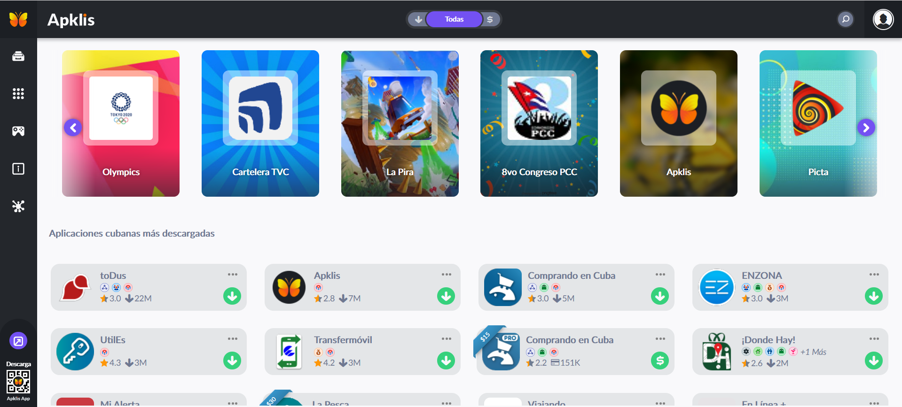

Apklis es un Centro de Aplicaciones Android cuyo objetivo es proveer un servicio oficial y confiable para la distribución de aplicaciones cubanas y foráneas para Android, potenciando así al desarrollo autóctono de las aplicaciones y proporcionando una vía para publicitar los menciondados productos. Con la distinción de proveer en mecanismo de actualización de las aplicaciones, permite la interacción de usuario y desarrolladores, generar modelos de negocios favorables a todos los involucrados, utilizar medios de pago electrónico y la capacidad de moderar las aplicaciones de acuerdo a los intereses y valores que defiende Cuba. Apklis está enfocada a dos tipos de usuarios: Desarrolladores que generan contenido y consumidores que son los usuarios consumidores del servicio.
¿Qué es Apklis?Apklis es un Centro de Aplicaciones Android, con diversas funcionalidades como:Gestionar Usuario Publicar Aplicaciones Descargar/Actualizar aplicaciones Filtrar aplicaciones por diversos criterios (búsqueda, autor, categoría) Realizar búsquedas Gestionar opciones y evaluaciones Denunciar aplicaciones por diversos motivos |
 |
¿Qué puedo hacer con Apklis?
| Descargar e instalar aplicaciones para Android |
Comentar y valorar la calidad y utilidad de las aplicaciones |
Comprar aplicaciones |
| Recomendar aplicaciones | Añadir aplicaciones a la lista de deseos |
Funcionar como consumidor o desarrollador |